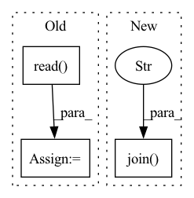

Pattern ID :8854
Before Change
def findAllGlsls(path):
cmd = "find " + path + " -name \"*.glsl\""
vexs = os.popen(cmd).read() .split("\n")
output = []
for f in vexs:
if len(f) > 1:After Change
DEFAULT_ENV = {"precision": "highp", "format": "rgba32f"}
def findAllGlsls(path):
vexs = glob.glob(os.path.join( path, "**", "*.glsl" ) , recursive=True)
output = []
for f in vexs:
if len(f) > 1:In pattern: SUPERPATTERN
Frequency: 3
Non-data size: 3
Instances Fragment ID: 32512610
Project Name: pytorch/pytorch
Commit Name: 45f5a3ceb8dffab4e0afc2fcb462434246fb9db7
Time: 2022-01-05
Author: mattjgalloway@fb.com
File Name: aten/src/ATen/gen_vulkan_glsl.py
M Class Name: AnonimousClass
N Class Name: AnonimousClass
M Method Name: findAllGlsls(1)
N Method Name: findAllGlsls(1)
M Parent Class:
N Parent Class:
M File Name: aten/src/ATen/gen_vulkan_glsl.py
N File Name: aten/src/ATen/gen_vulkan_glsl.py
M Start Line: 13
M End Line: 14
N Start Line: 14
N End Line: 14
Before Change
self.waves = list()
for path in tqdm(self.list_of_eligible_wave_paths):
with open(path, "rb") as audio_file:
wave_orig, _ = sf.read( audio_file)
self.waves.append(self.preprocess_ap.audio_to_wave_tensor(wave_orig, normalize=True, mulaw=False))
print("{} eligible audios found".format(len(self.waves)))
def cache_builder_process(self, path_split):After Change
self.desired_samplingrate = desired_samplingrate
self.melspec_ap = AudioPreprocessor(input_sr=desired_samplingrate, output_sr=16000, melspec_buckets=80, hop_length=256, n_fft=1024, cut_silence=False)
if not os.path.exists(os.path.join( cache_dir, "waves.pt" ) ):
// hop length of spec loss must be same as the product of the upscale factors
// samples per segment must be a multiple of hop length of spec loss
_, self._orig_sr = sf.read(list_of_paths[0]) Fragment ID: 32512612
Project Name: digitalphonetics/ims-toucan
Commit Name: c762d97e04a62c8f3d839cc12c1f3c2b375bde9e
Time: 2021-10-28
Author: florian.lux@ims.uni-stuttgart.de
File Name: TrainingInterfaces/Spectrogram_to_Wave/HiFIGAN/HiFiGANDataset.py
M Class Name: HiFiGANDataset
N Class Name: HiFiGANDataset
M Method Name: __init__(6)
N Method Name: __init__(5)
M Parent Class: Dataset
N Parent Class: Dataset
M File Name: TrainingInterfaces/Spectrogram_to_Wave/HiFIGAN/HiFiGANDataset.py
N File Name: TrainingInterfaces/Spectrogram_to_Wave/HiFIGAN/HiFiGANDataset.py
M Start Line: 23
M End Line: 49
N Start Line: 17
N End Line: 54
Before Change
hFilePath, cppFilePath, srcDirPath, glslcPath, tmpDirPath))
cmd = "find " + srcDirPath + " -name \"*.glsl\""
vexs = os.popen(cmd).read() .split("\n")
templateSrcPaths = []
for f in vexs:
if len(f) > 1:After Change
print("hFilePath:{} cppFilePath:{} srcDirPath:{} glslcPath:{} tmpDirPath:{}".format(
hFilePath, cppFilePath, srcDirPath, glslcPath, tmpDirPath))
vexs = glob.glob(os.path.join( srcDirPath, "**" , "*.glsl") , recursive=True)
templateSrcPaths = []
for f in vexs:
if len(f) > 1: Fragment ID: 32512614
Project Name: pytorch/pytorch
Commit Name: 45f5a3ceb8dffab4e0afc2fcb462434246fb9db7
Time: 2022-01-05
Author: mattjgalloway@fb.com
File Name: aten/src/ATen/gen_vulkan_spv.py
M Class Name: AnonimousClass
N Class Name: AnonimousClass
M Method Name: genCppH(6)
N Method Name: genCppH(6)
M Parent Class:
N Parent Class:
M File Name: aten/src/ATen/gen_vulkan_spv.py
N File Name: aten/src/ATen/gen_vulkan_spv.py
M Start Line: 21
M End Line: 22
N Start Line: 22
N End Line: 22